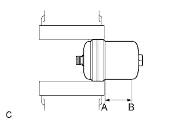

ГИДРАВЛИЧЕСКИЙ УСИЛИТЕЛЬ ТОРМОЗНОЙ СИСТЕМЫ (для моделей с правосторонним рулевым управлением) > СНЯТИЕ С ЭКСПЛУАТАЦИИ |
| 1. УТИЛИЗИРУЙТЕ ГИДРОАККУМУЛЯТОР УСИЛИТЕЛЯ ТОРМОЗНОЙ СИСТЕМЫ В СБОРЕ |
|  |
Установите гидроаккумулятор усилителя тормозной системы в сборе в тиски и накройте его тканью.
С помощью ножовки разрежьте корпус гидроаккумулятора усилителя тормозной системы между точками А и В, как показано на рисунке, чтобы выпустить газ.
Когда наружный корпус гидроаккумулятора усилителя тормозной системы будет разрезан, из него выйдут газ и жидкость.